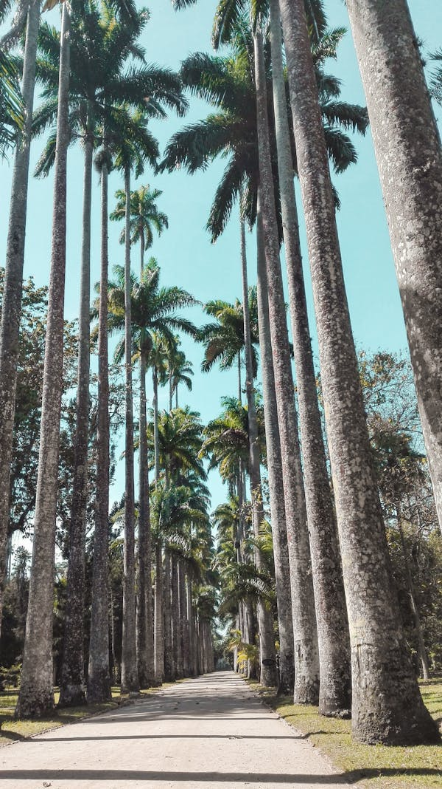

Experience the awe of Christ the Redeemer, Rio de Janeiro’s iconic statue and symbol of peace. Towering at 98 feet with outstretched arms atop Mount Corcovado, it offers stunning panoramic views of the city, including Sugarloaf Mountain and Copacabana Beach.
Discover the magic of Sugarloaf Mountain, one of Rio de Janeiro's most iconic landmarks. Rising 1,299 feet above the harbor, this stunning granite peak offers unbeatable 360° views of the city, coastline, and the vibrant landscape of Rio.

Step into the serene beauty of the Rio de Janeiro Botanical Garden, a lush oasis in the heart of the city. Covering over 350 acres, this world-renowned garden is home to more than 6,500 species of plants, including towering imperial palms, vibrant orchids, and exotic Amazonian flora.
Hi, I'm Aaron! Since moving to Brazil in 2010, I have been captivated by the vibrant culture, stunning landscapes, and warm-hearted people of Rio de Janeiro. From watching the sunrise over Ipanema Beach to dancing samba during Carnival, every moment here inspires my creativity and passion for life.
As an aspiring front-end developer, I am dedicated to mastering the art of creating user-friendly and visually appealing web experiences. Currently, I’m diving into HTML, CSS, and JavaScript, and I love working on projects that challenge my skills and ignite my curiosity.
When I'm not coding, you can find me exploring the city’s hidden gems, indulging in delicious Brazilian cuisine, or photographing the breathtaking views from the mountains. I believe that life is all about growth and exploration, and I'm excited to see where my journey takes me next!
"Live life in color!" – This quote resonates with me, reminding me to embrace every experience with enthusiasm and joy.